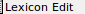
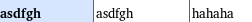
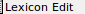
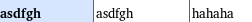
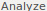
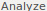
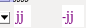
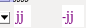
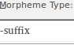
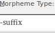

import a_setup
from test_helper import TestHelper
from Regionplus import Regionplus
helper = TestHelper("check_suffix_formation")
# Make sure the word exists
helper.Click( , "Couldn't find 'Lexicon' button")
helper.Click(, "Couldn't find 'Lexicon Edit' button")
helper.Exists(, "'asdfgh' word does not exist")
# Enter text if it's not there
helper.Click(
, "Couldn't find 'Lexicon' button")
helper.Click(, "Couldn't find 'Lexicon Edit' button")
helper.Exists(, "'asdfgh' word does not exist")
# Enter text if it's not there
helper.Click( , "'Texts & Words' not found")
helper.Click(Pattern(
, "'Texts & Words' not found")
helper.Click(Pattern( ).similar(0.90), "'Baseline' tab not found")
helper.Click(
).similar(0.90), "'Baseline' tab not found")
helper.Click( , "Blank space not found") # Move cursor to blank space
if not exists(
, "Blank space not found") # Move cursor to blank space
if not exists( ):
paste("asdfgh jjjj")
# View Analyze tab, put jjjj in focus
helper.Click(Pattern().similar(0.90), "'Analyze' tab not found")
hover(
):
paste("asdfgh jjjj")
# View Analyze tab, put jjjj in focus
helper.Click(Pattern().similar(0.90), "'Analyze' tab not found")
hover( ) # Move to blank space so the hovertext doesn't appear
if not exists(Pattern(
) # Move to blank space so the hovertext doesn't appear
if not exists(Pattern( ).similar(0.80)):
helper.Click(, "jjjj word not found")
# Split word
helper.Click(Pattern(
).similar(0.80)):
helper.Click(, "jjjj word not found")
# Split word
helper.Click(Pattern( ).targetOffset(4,2), "'jjjj' not found on Morpheme line")
type("-")
helper.Exists(Pattern().similar(0.90), "Word not split into two morphemes")
# Verify that second morpheme is a suffix
helper.Click(Pattern().targetOffset(10,0), "Drop down menu not found")
helper.Click(
).targetOffset(4,2), "'jjjj' not found on Morpheme line")
type("-")
helper.Exists(Pattern().similar(0.90), "Word not split into two morphemes")
# Verify that second morpheme is a suffix
helper.Click(Pattern().targetOffset(10,0), "Drop down menu not found")
helper.Click( , "'Create New Entry' not found in drop down menu")
wait(2)
helper.Exists(Pattern().similar(0.90), "Morpheme type not listed as '-suffix'")
helper.Click(Pattern().similar(0.91), "'Cancel' button not found", restart=True)
# Put 'jjjj' back into one word so the test works next time
# Maybe not necessary? Since a new project gets created every time
# all scripts are run....
helper.Click(Pattern(
, "'Create New Entry' not found in drop down menu")
wait(2)
helper.Exists(Pattern().similar(0.90), "Morpheme type not listed as '-suffix'")
helper.Click(Pattern().similar(0.91), "'Cancel' button not found", restart=True)
# Put 'jjjj' back into one word so the test works next time
# Maybe not necessary? Since a new project gets created every time
# all scripts are run....
helper.Click(Pattern( ).targetOffset(-37,1), "Drop down menu not found")
helper.Click(Pattern().similar(0.95).targetOffset(-23,1), "'jjjj' option not found in drop down menu")
helper.Click(, "'Lexicon' button not found")
helper.write_success()
).targetOffset(-37,1), "Drop down menu not found")
helper.Click(Pattern().similar(0.95).targetOffset(-23,1), "'jjjj' option not found in drop down menu")
helper.Click(, "'Lexicon' button not found")
helper.write_success()